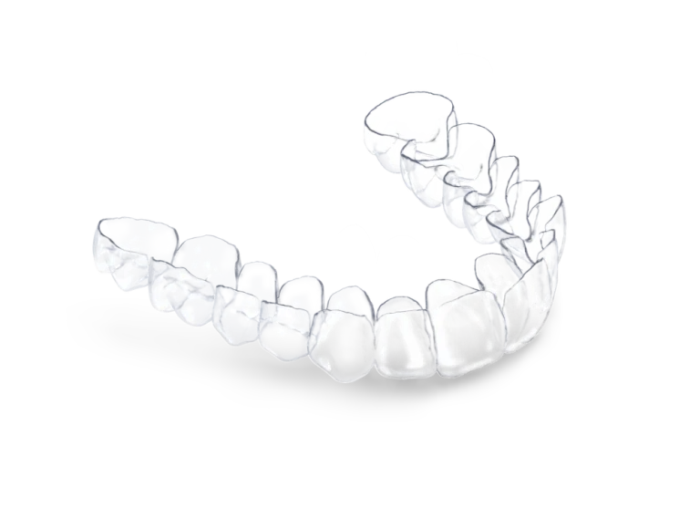
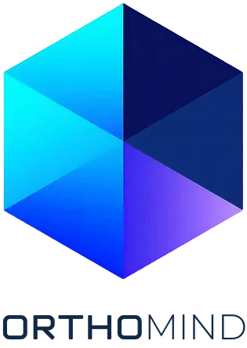
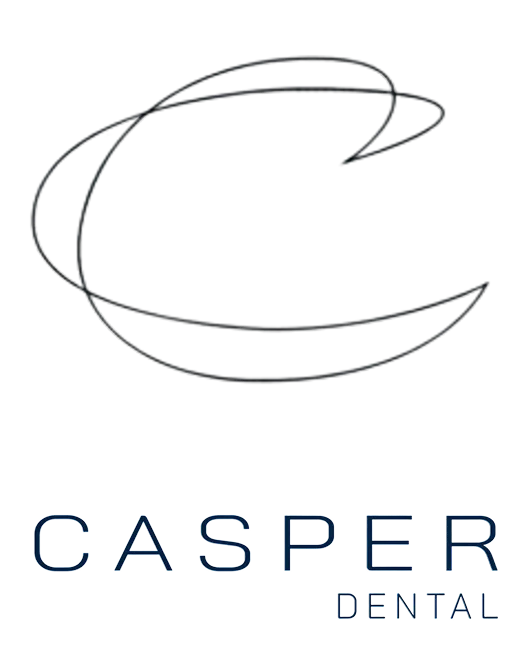
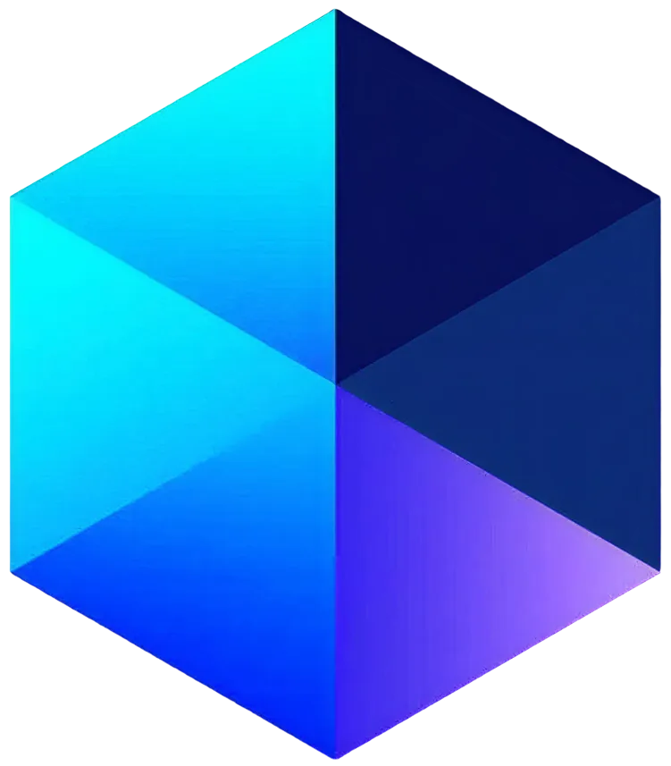
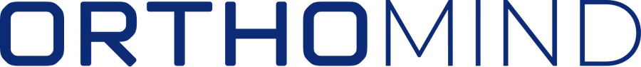
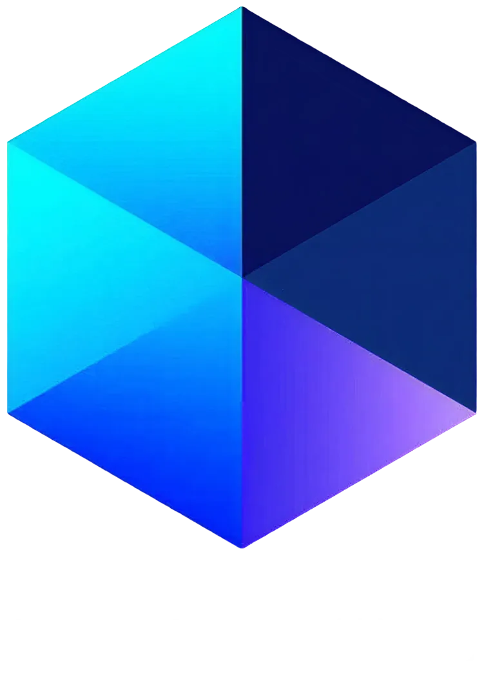
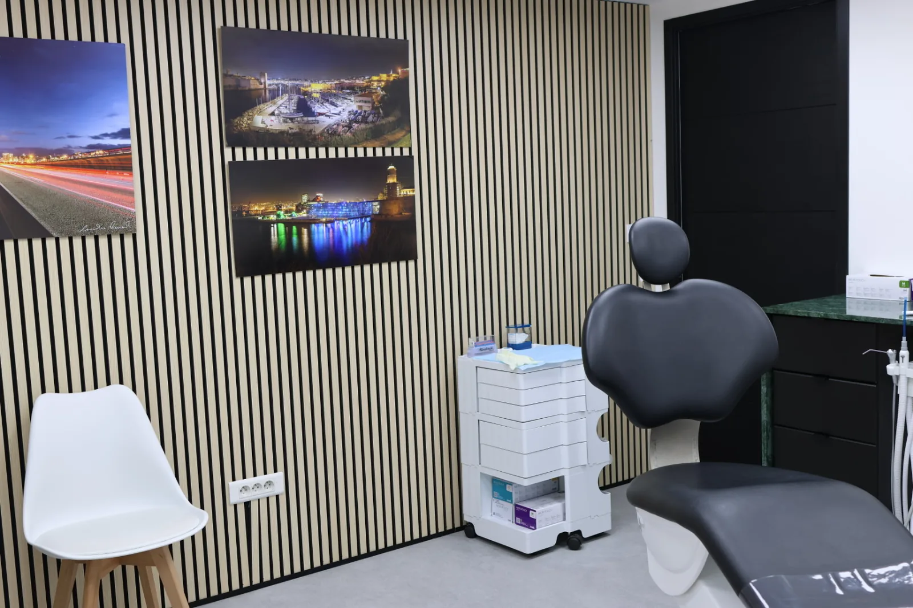

Cabinet d'orthodontie & production de gouttières à Aix‑en‑Provence. Aligneurs transparents, appareils esthétiques et suivi numérique continu — pour les adultes exigeants comme pour les sourires qui grandissent.

Photographiez votre sourire. Votre bilan est vérifié par nos chirurgiens‑dentistes qualifié(e)s.
Démarrer mon Évaluation Orthodontique→
Kit complet pour faciliter l'entretien et l'utilisation de vos aligneurs.


Notre logiciel d'auto‑téléconsultation guide vos prises de vue, analyse votre alignement et transmet le dossier à nos chirurgiens‑dentistes qualifié(e)s. Aucun algorithme ne décide seul : chaque plan est validé humainement.
Démarrer mon Évaluation Orthodontique→Simulation d'alignement, faisabilité, durée estimée et alternatives thérapeutiques.
Votre dossier est signé par un chirurgien‑dentiste qualifié en orthodontie avant toute proposition.

Chaque protocole est établi après scanner 3D, analyse céphalométrique et entretien clinique au cabinet.
Invisibles, amovibles, imprimés sur mesure. Le choix des adultes actifs.
Céramique ou lingual pour les cas complexes, sans sacrifier l'apparence.
Interception précoce, guidage de croissance et suivi jusqu'à la contention.
Chirurgien‑dentiste orthodontiste qualifié, le Dr Renaud Desouches conçoit chaque traitement comme un projet sur mesure : diagnostic numérique complet, objectifs partagés, et un seul praticien du premier rendez‑vous à la contention. Les gouttières sont produites au cabinet, route de Galice.

« Le diagnostic en ligne m'a évité trois déplacements. Tout était déjà prêt à ma première visite. »
« Un cabinet d'une propreté irréprochable et des explications d'une clarté rare. »
« Ma fille de 9 ans n'a jamais eu peur de venir. C'est tout dire. »
L'évaluation orthodontique en ligne est en cours de finalisation. En attendant, le cabinet reste joignable pour un premier avis.